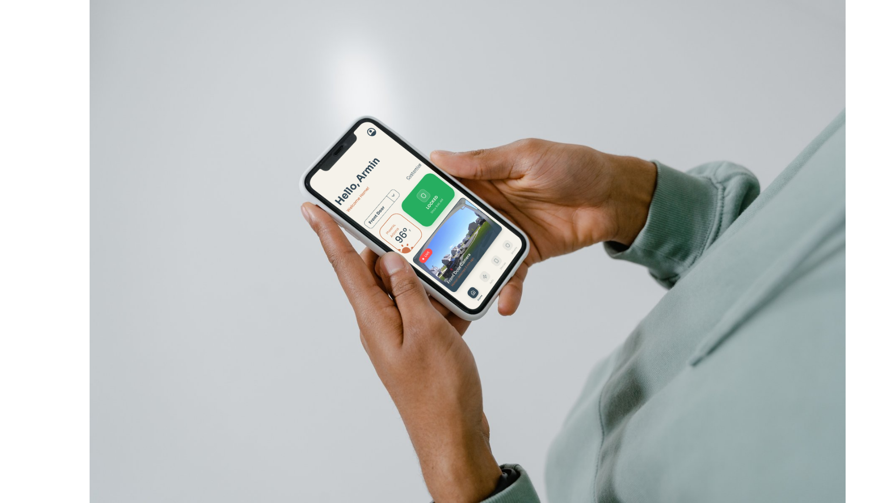
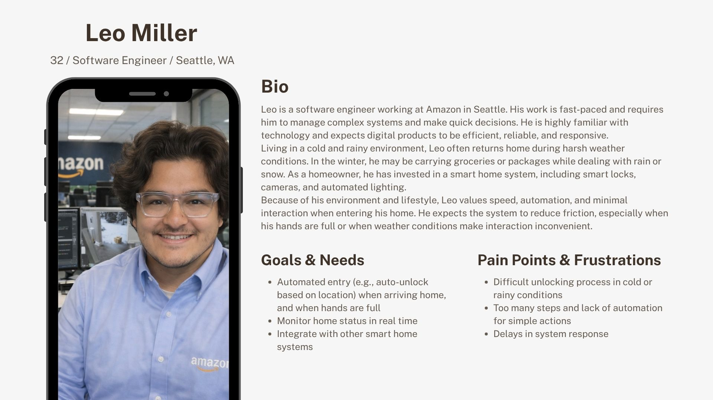
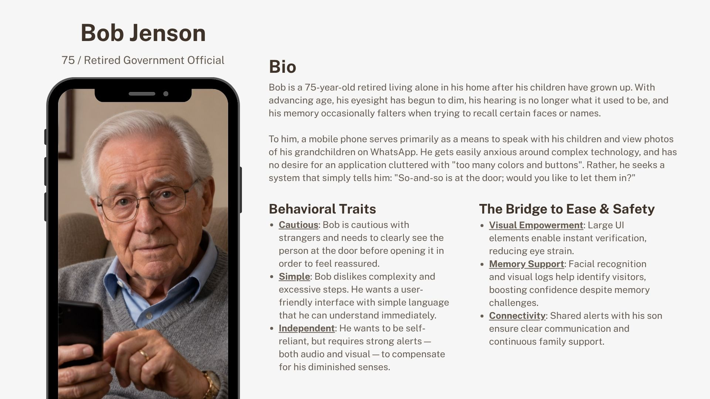
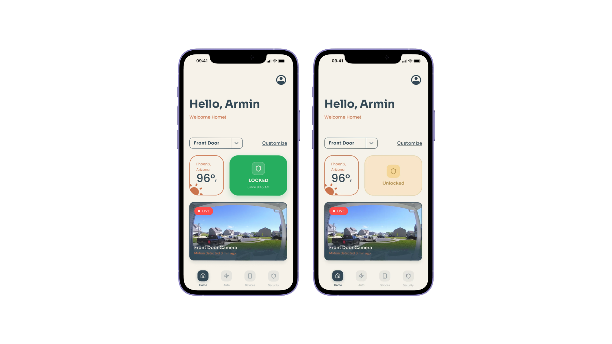
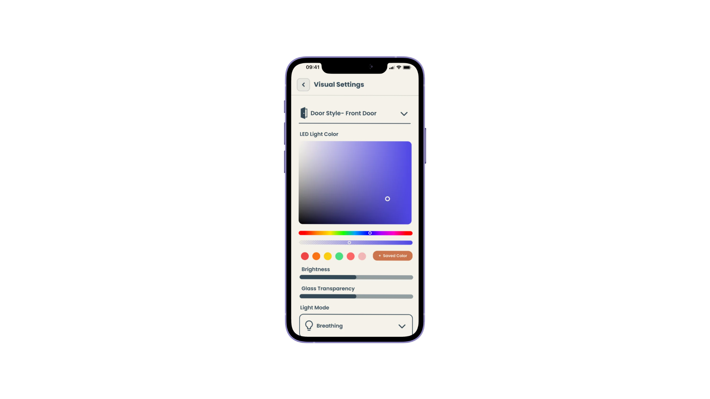
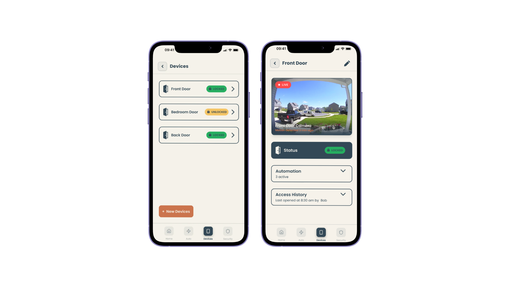

A UX/UI redesign for a smart door iOS app — focused on making lock-state feedback trustworthy, interaction flows accessible to all ages, and the design system ready for developer handoff.

Door Face Panels (DFP) is a startup building a new generation of smart door systems built on patented IoT technologies with customizable panel designs. Their iOS companion app — the Door Face App — lets users lock, unlock, and manage connected door hardware remotely.
Our team was brought in during Spring 2026 (ASU HSE 521) to evaluate the existing app and deliver a research-driven UX/UI redesign. The product handles high-trust, security-sensitive actions — meaning usability failures carry real consequences.
Invisible System Status
The app provided little or no feedback during locking actions. Users couldn't tell if the door had actually locked — a major gap for a security-critical product.
Cognitive Load in the Unlock Flow
The unlock task required too many decision steps, creating hesitation — especially for older or less tech-confident users.
Single-Modal Feedback Only
Confirmation relied on visual signals alone, with no audio or haptic reinforcement — leaving users with sensory constraints underserved.
Deliver a redesigned interface across four core dimensions: Usability, Reliability, Accessibility, and System Feedback Clarity — with developer-ready Figma assets and a structured design system.
I led usability evaluation and research-driven interface design. My role focused on diagnosing interaction failures through heuristic analysis, translating findings into design requirements, and shaping interaction decisions for users across age groups and technical backgrounds.
This was a four-person team project. Abdullah Albagami contributed to system-oriented design, Stephan Bui supported wireframes and the visual system, and Corrine Kao contributed to research, interface design, and prototyping. Corrine and I both worked on interface design; my contribution centered on usability, interaction logic, and research-to-design translation.
A full UX/UI redesign delivered as a high-fidelity Figma prototype with a complete design system — including a grid framework, card components, input validation states, and selection controls. The redesign removed interaction friction, made lock state legible at a glance, and added multimodal feedback for accessibility.
We applied an Agile UX Design methodology — moving in structured sprints from diagnosis to high-fidelity output. Rather than stopping at aesthetic improvement, we grounded every design decision in evaluation data.
We evaluated the existing app against Jakob Nielsen's 10 Usability Heuristics. The most critical finding was a failure of Visibility of System Status: during locking, the interface gave no clear confirmation that the door had actually changed state.
This was rated major severity — in a product where users need to trust that their door is locked, silent or ambiguous feedback is not a minor annoyance. It actively erodes trust.
Lock confirmation was absent or uninterpretable
Users could not reliably tell if the door locked. Feedback was either missing entirely or too subtle to act on under stress.
Older users faced disproportionate friction
The unlock flow had unnecessary decision steps that generated cognitive load and fear of accidental actions — especially for Bob, our 75-year-old persona.
No multimodal feedback
Confirmation was visual-only. Users with low vision or motor difficulty had no alternative signal to confirm system state.
Design system lacked consistency
Component patterns were inconsistent, making it harder to establish user expectations or maintain visual trust across screens.

Leo Miller · Age 32
Technologically confident. Prioritises speed and efficiency. Wants the fewest taps possible to accomplish security tasks. Risk: becomes impatient with ambiguous states.

Bob Jenson · Age 75
Lower technical self-assurance. Likely sensory constraints. Needs clear confirmation at every step and reassurance that actions are reversible. Risk: freezes when feedback is unclear.
A Hierarchical Task Analysis (HTA) mapped the full unlock flow. For Bob, two friction points emerged:
— Unnecessary decision stages mid-flow required mental effort before the main action
— No indication of whether the system had registered his input
These weren't edge cases. They were predictable failures for a large portion of real users.
How might we design a smart lock interface that communicates real-time physical state clearly enough that a 75-year-old with low tech confidence can trust it — without slowing down a 32-year-old power user?
The core opportunity was feedback redesign: replace silent or ambiguous status signals with immediate, legible, multimodal confirmation. This single change would serve both personas — and make the product trustworthy for high-stakes security actions.
Evaluate the Existing App
Systematic heuristic walkthrough against Nielsen's 10 principles. Documented severity ratings for each issue.
Define Users Through Personas + HTA
Built Leo and Bob as contrasting need profiles. Mapped the unlock flow as a task hierarchy to locate specific points of failure.
Frame Design Requirements
Translated evaluation findings into requirements: clear lock-state feedback, streamlined flow, multimodal cues, consistent component language.
Low-Fidelity Wireframes
Focused on information hierarchy, task flow structure, and iOS navigation conventions. Established screen layout before visual styling.
High-Fidelity Prototype + Design System
Full visual build in Figma. Defined grid system, card components, input validation states, and selection controls as developer-ready assets.

Lo-Fi → Hi-Fi · Locked State & Unlocked State
Before — Original App
Locking action returns no clear feedback. Users see the same screen regardless of door state. Unlock flow requires multiple taps through ambiguous menus. Single-modal visual feedback only.
After — Redesign
Lock state is displayed immediately and clearly in the interface. Unlock flow is shortened by removing unnecessary decision stages. Visual + audio + haptic feedback confirm every state change.
Real-Time Lock State Visibility
The door's true physical state is the most important thing the interface communicates. Redesigned lock control reports state immediately on every change — no ambiguity.
Multimodal Confirmation
Visual cues paired with audio feedback for every security-sensitive action. Users don't have to look at the screen to know the door locked.
Streamlined Interaction Order
Unnecessary steps removed from the unlock flow. Interaction order matches the user's mental model — what they expect to tap next is what's next on screen.
Consistent Component Language
A structured design system — grid, cards, inputs, selection controls — creates predictable visual patterns across all screens, building user confidence through familiarity.

High-Fidelity Prototype · Visual Settings Screen
The full design system was built and maintained in Figma as developer-ready assets:
Grid System
Column structure, spacing, and responsive breakpoints across desktop, tablet, and mobile.
Card Components
Reusable card patterns with defined content hierarchy, visual grouping, and CTA placement.
Input Fields
Text inputs with label structure, placeholder usage, and validation states: success, warning, error.
Selection Controls
Dropdowns, checkboxes, radio buttons, and toggles — structured for flexible, predictable input patterns.

Design System Components
A — Grid System
Column structure & responsive breakpoints
B — Card Components
Reusable patterns with defined content hierarchy
C — Input Fields
Success · Warning · Error validation states
D — Selection Controls
Dropdowns · Checkboxes · Toggles · Radio
The project concluded with a full UX/UI baseline: heuristic evaluation documentation, persona and HTA artifacts, low-fidelity wireframes, and a high-fidelity Figma prototype with a complete design system.
This established a clear design direction and development-ready foundation for the Door Face App team.
Empirical Usability Validation
Controlled sessions with target users to quantify task completion, time-on-task, error rates, and SUS scores. This turns design intent into measurable evidence.
Scenario-Based Testing Under Real Conditions
Test under network latency, device disconnections, and repeated input sequences. Reliability failures won't surface in ideal lab conditions.
System Synchronization Validation
Confirm that on-screen lock state always matches the door's actual physical position. Any mismatch destroys user trust — immediately and lastingly.
Design-to-Development Handoff
Translate design system into design tokens, component behavior definitions, and interaction rules — so what ships matches what was designed.
Confidence in High-Trust Actions
Users can lock their door and know — immediately — that it worked. Removing uncertainty from a security action has outsized psychological value.
Accessible to Both Personas
Leo gets a streamlined, fast flow. Bob gets clear feedback and reduced decision load. The redesign doesn't sacrifice one user for the other.
The design system gives DFP a consistent visual foundation that can scale with their product. Developer-ready Figma assets reduce handoff friction and the risk of inconsistent implementation.
Strategic recommendations around accessibility (WCAG 2.1), security evaluation, and behavioral analytics position the product for sustainable, evidence-based iteration.
This project reinforced that high-stakes products require a different UX standard. When a user can't tell if their door is locked, that's not a minor friction point — it's a failure of the product's core promise.
Designing for two very different users (Leo vs. Bob) without creating two different experiences required careful prioritisation: the solution had to be fast enough for Leo and clear enough for Bob. That constraint forced better design thinking than either persona in isolation would have.
I'd push for user testing earlier — even informal walkthroughs with 3–5 participants would have validated whether our feedback redesign actually resolved Bob's uncertainty, rather than leaving that as an open recommendation. The project ended with strong design artifacts but limited behavioral evidence.
I'd also prioritise the system synchronization challenge earlier. The hardest usability problem for this product isn't in the interface — it's in the gap between what the app shows and what the door is actually doing. That's an engineering and trust problem, and UX can't solve it alone.
This project demonstrates how I apply structured evaluation frameworks — heuristic analysis, task decomposition, persona-driven scenario thinking — to translate abstract usability problems into concrete design decisions.
It also shows my interest in the intersection of UX and trust: how the interface shapes whether a person believes a system is working, even when the underlying system is correct. That gap between perceived reliability and actual reliability is where a lot of the most important UX work happens.